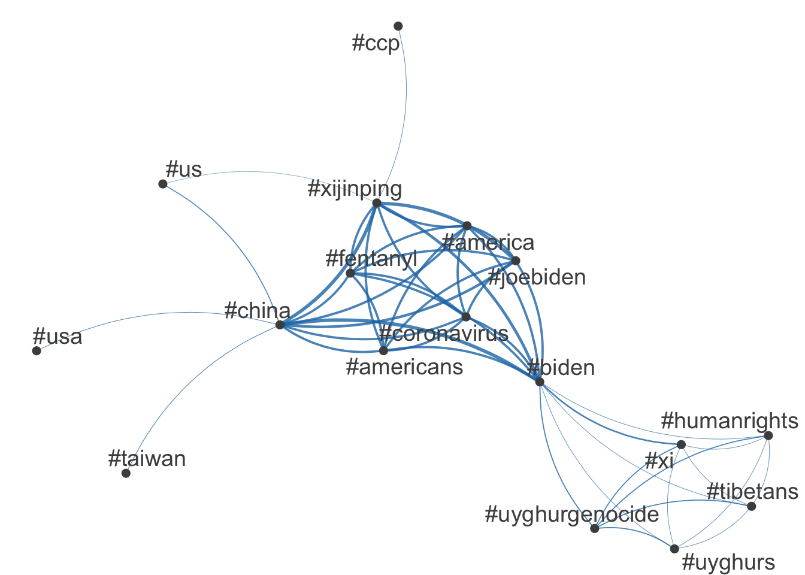
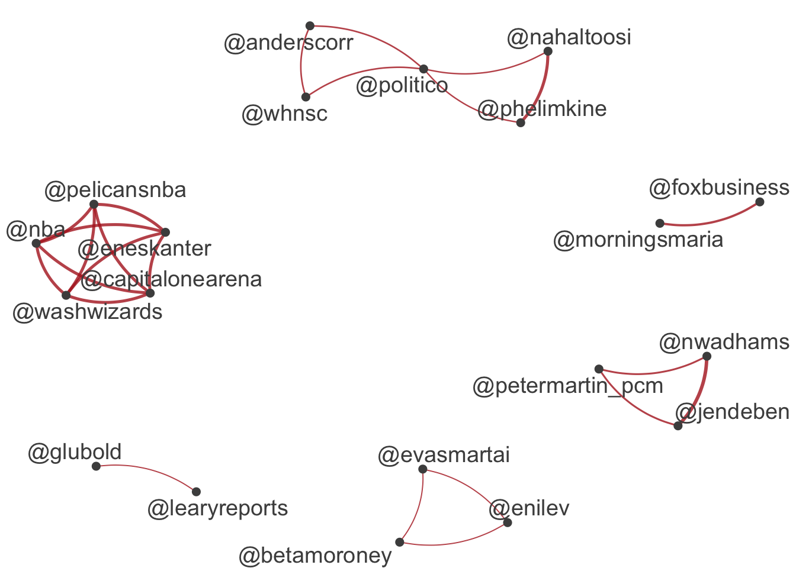

# Sample program for using quanteda for text modeling and analysis
# Documentation: vignette("quickstart", package = "quanteda")
# Website: https://quanteda.io/
library(quanteda)Package version: 4.1.0
Unicode version: 14.0
ICU version: 71.1Parallel computing: disabledSee https://quanteda.io for tutorials and examples.library(quanteda.textmodels)
library(quanteda.textplots)
library(readr)
library(ggplot2)
# Twitter data about President Biden and Xi summit in Novemeber 2021
# Do some background search/study on the event
#
summit <- read_csv("https://raw.githubusercontent.com/datageneration/datamethods/master/textanalytics/summit_11162021.csv")Rows: 14520 Columns: 90── Column specification ────────────────────────────────────────────────────────
Delimiter: ","
chr (50): screen_name, text, source, reply_to_screen_name, hashtags, symbol...
dbl (26): user_id, status_id, display_text_width, reply_to_status_id, reply...
lgl (10): is_quote, is_retweet, quote_count, reply_count, ext_media_type, q...
dttm (4): created_at, quoted_created_at, retweet_created_at, account_create...
ℹ Use `spec()` to retrieve the full column specification for this data.
ℹ Specify the column types or set `show_col_types = FALSE` to quiet this message.View(summit)
sum_twt = summit$text
toks = tokens(sum_twt)
sumtwtdfm <- dfm(toks)
class(toks)[1] "tokens"# Latent Semantic Analysis
## (https://quanteda.io/reference/textmodel_lsa.html)
sum_lsa <- textmodel_lsa(sumtwtdfm, nd=4, margin = c("both", "documents", "features"))
summary(sum_lsa) Length Class Mode
sk 4 -none- numeric
docs 58080 -none- numeric
features 63972 -none- numeric
matrix_low_rank 232218360 -none- numeric
data 232218360 dgCMatrix S4 head(sum_lsa$docs) [,1] [,2] [,3] [,4]
text1 8.670375e-03 9.539431e-03 -3.365261e-03 1.378640e-02
text2 8.662406e-06 -8.754517e-06 -6.159723e-06 1.673892e-05
text3 2.917454e-03 6.809891e-03 1.059921e-03 -3.180288e-03
text4 1.046103e-02 8.782783e-04 -4.359418e-03 4.941183e-03
text5 3.247147e-03 8.006068e-03 1.632191e-04 -4.657788e-03
text6 3.247147e-03 8.006068e-03 1.632191e-04 -4.657788e-03class(sum_lsa)[1] "textmodel_lsa"tweet_dfm <- tokens(sum_twt, remove_punct = TRUE) %>%
dfm()
head(tweet_dfm)Document-feature matrix of: 6 documents, 15,927 features (99.89% sparse) and 0 docvars.
features
docs breaking news us president biden amp communist china leader xi
text1 1 1 1 1 1 1 1 2 1 1
text2 0 0 0 0 0 0 0 0 0 0
text3 0 0 0 0 1 0 0 0 0 1
text4 0 0 0 1 1 0 0 0 0 1
text5 0 0 0 0 1 0 0 0 0 1
text6 0 0 0 0 1 0 0 0 0 1
[ reached max_nfeat ... 15,917 more features ]tag_dfm <- dfm_select(tweet_dfm, pattern = "#*")
toptag <- names(topfeatures(tag_dfm, 50))
head(toptag, 10) [1] "#china" "#biden" "#xijinping" "#joebiden" "#america"
[6] "#americans" "#coronavirus" "#fentanyl" "#xi" "#us" library("quanteda.textplots")
tag_fcm <- fcm(tag_dfm)
head(tag_fcm)Feature co-occurrence matrix of: 6 by 665 features.
features
features #breaking #breakingnews #biden #china #usa #pray4america
#breaking 0 4 5 5 5 0
#breakingnews 0 0 4 5 4 0
#biden 0 0 0 443 49 0
#china 0 0 0 8 76 0
#usa 0 0 0 0 6 0
#pray4america 0 0 0 0 0 0
features
features #joebiden #xijinping #america #americans
#breaking 0 0 0 0
#breakingnews 0 0 0 0
#biden 299 370 302 295
#china 339 434 308 295
#usa 12 15 0 0
#pray4america 0 0 0 0
[ reached max_nfeat ... 655 more features ]topgat_fcm <- fcm_select(tag_fcm, pattern = toptag)
textplot_network(topgat_fcm, min_freq = 50, edge_alpha = 0.8, edge_size = 1)
user_dfm <- dfm_select(tweet_dfm, pattern = "@*")
topuser <- names(topfeatures(user_dfm, 50))
head(topuser, 20) [1] "@potus" "@politico" "@joebiden" "@jendeben"
[5] "@eneskanter" "@nwadhams" "@phelimkine" "@nahaltoosi"
[9] "@nba" "@washwizards" "@pelicansnba" "@capitalonearena"
[13] "@kevinliptakcnn" "@foxbusiness" "@morningsmaria" "@scmpnews"
[17] "@petermartin_pcm" "@nytimes" "@uyghur_american" "@kaylatausche" user_fcm <- fcm(user_dfm)
head(user_fcm, 20)Feature co-occurrence matrix of: 20 by 711 features.
features
features @youtube @bfmtv @cnn @lauhaim @barackobama @joebiden
@youtube 0 0 0 0 0 0
@bfmtv 0 0 1 1 1 1
@cnn 0 0 0 1 1 1
@lauhaim 0 0 0 0 1 1
@barackobama 0 0 0 0 0 1
@joebiden 0 0 0 0 0 3
@kamalaharris 0 0 0 0 0 0
@hillaryclinton 0 0 0 0 0 0
@billclinton 0 0 0 0 0 0
@cbsnews 0 0 0 0 0 0
features
features @kamalaharris @hillaryclinton @billclinton @cbsnews
@youtube 0 0 0 0
@bfmtv 1 1 1 1
@cnn 1 1 1 1
@lauhaim 1 1 1 1
@barackobama 1 1 1 1
@joebiden 1 1 1 1
@kamalaharris 0 1 1 1
@hillaryclinton 0 0 1 1
@billclinton 0 0 0 1
@cbsnews 0 0 0 0
[ reached max_feat ... 10 more features, reached max_nfeat ... 701 more features ]user_fcm <- fcm_select(user_fcm, pattern = topuser)
textplot_network(user_fcm, min_freq = 20, edge_color = "firebrick", edge_alpha = 0.8, edge_size = 1)